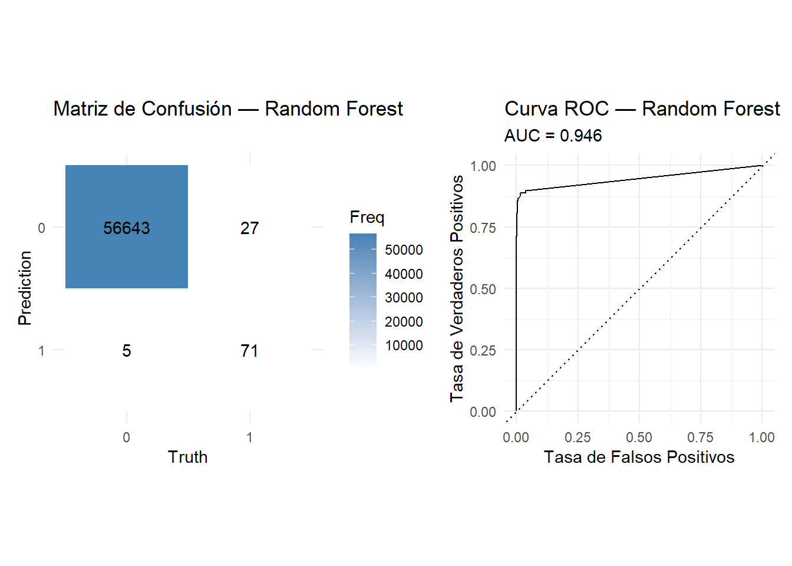
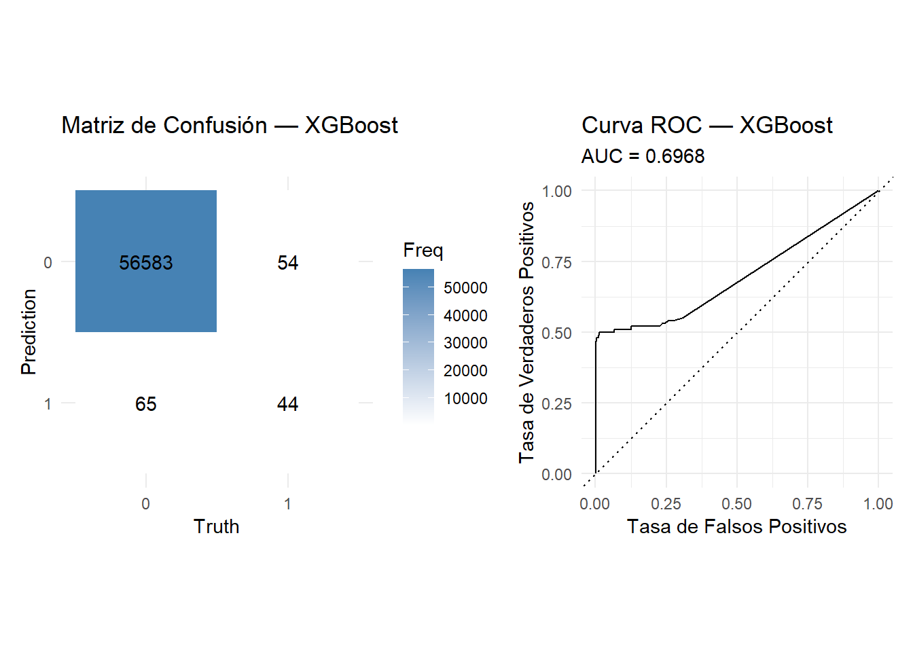
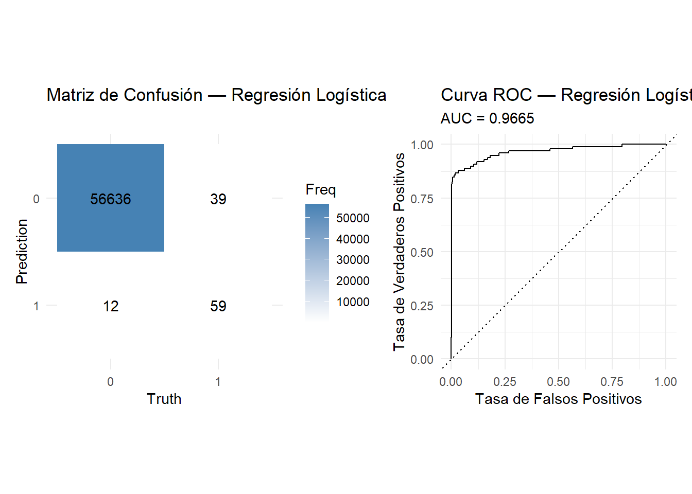
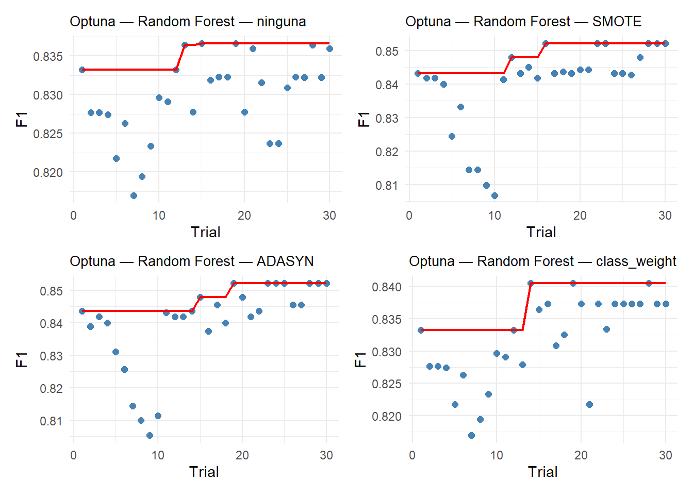
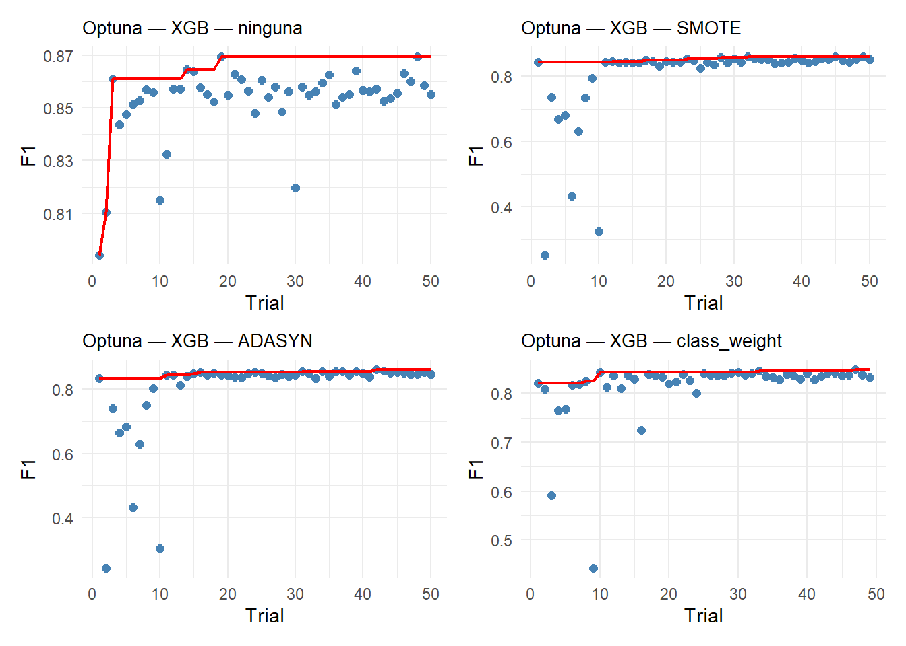
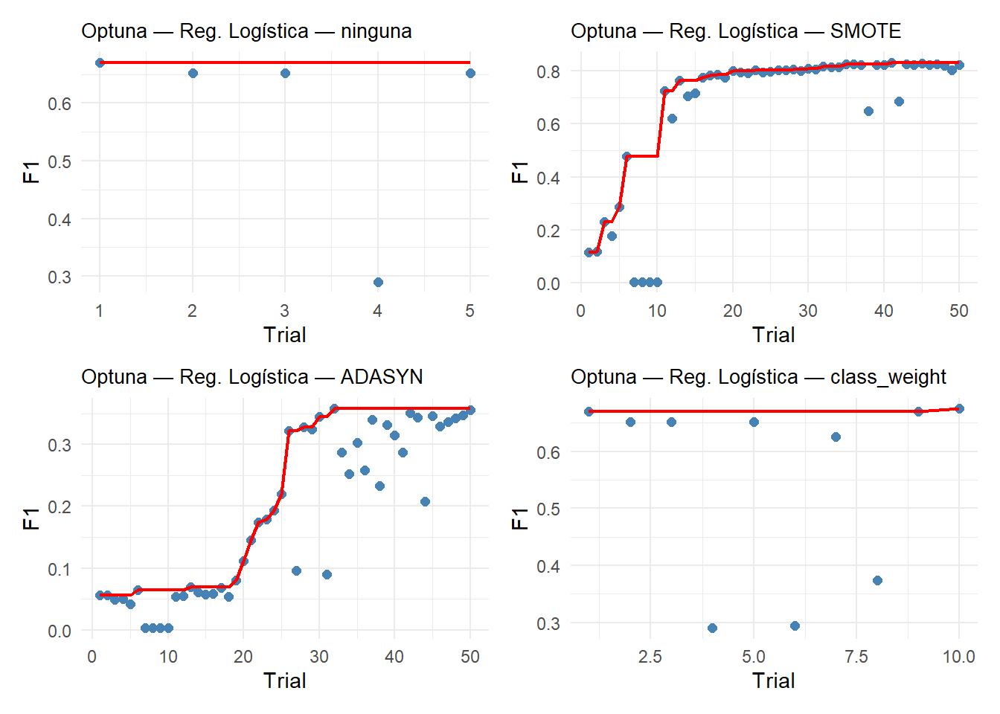
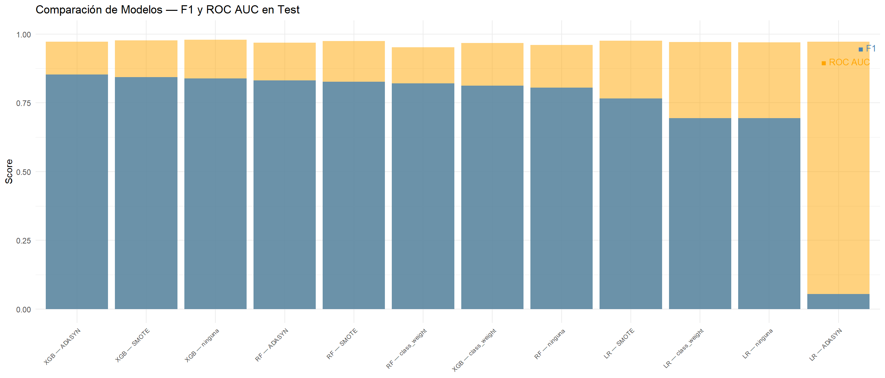
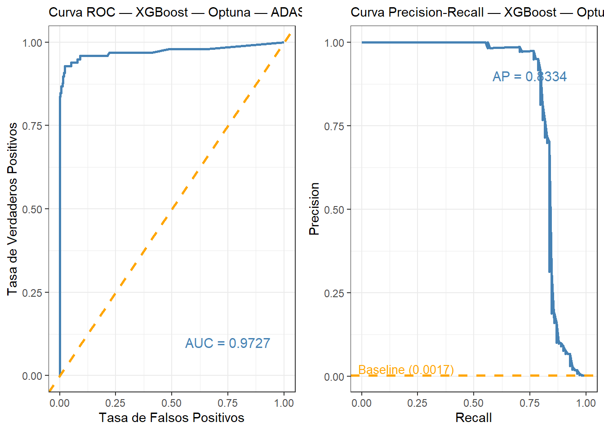
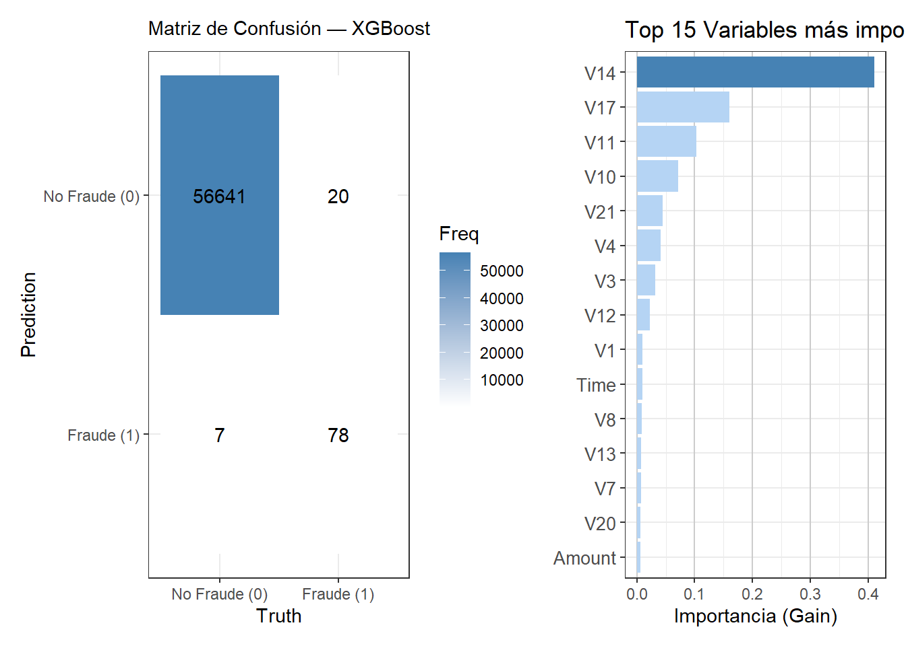

9 Modelado
En esta parte, se encontrará la parte del modelado, en el cual se entrenaran varios modelos y se harán las respectivas pruebas estadísticas para encontrar el más eficientes en términos de métrica y rapidez. Dado que existen muchos modelos, se escogieron los más adecuados de acuerdo al contexto del problema y del dataset, teniendo en cuenta, datos atípicos, valores faltantes y desbalance extremo de clases (99.83% transacciones legítimas vs. 0.17% fraudulentas). Aparte, dado al desbalance extremo que se afronta, se buscará también evaluar el desempeño de los modelos con o sin la aplicación de estas técnicas.
Con esto en mente, se compararon los siguientes modelos:
- Regresión logística: es un modelo base para clasificación binaria que se usa para evaluar si los modelos más complejos realmente aportan.
- Random Forest: es un modelo robusto con clases desbalanceadas. Asimismo, no necesita escalar variables y captura relaciones no lineales. Se usa mucho en detección de fraude en la industria.
- XGBoost: es un modelo que se usa mucho en datasets desbalanceados gracias a su técnica de optimización por gradiente y sus parámetros de regularización.
Métrica de optimización: F1-Score
Por el gran desbalance de clases en el dataset, la métrica que se escogió optimizar es el F1-Score. Esta decisión es debido a que:
- La accuracy no es una métrica recomendable en datasets desbalanceados, pues si un modelo clasifica todas las transacciones como legítimas obtendría una alto accuracy sin detectar ningún fraude.
- El Recall mide la proporción de fraudes reales detectados, mientras que la Precision mide la proporción de alertas que sí son fraude.
- El F1-Score es la media armónica entre Precision y Recall. Con esto en mente, penaliza de forma tanto los falsos negativos (fraudes no detectados) como los falsos positivos (alertas falsas), por lo que es una métrica muy adecuada para evaluar a los modelos. Siguiendo este orden de ideas, realmente depende de los objetivos de la empresa, pero en este caso es muy importante no dejar pasar fraudes, pero también lo es no generar falsas alarmas que pueden generar altos costos en las empresas y pérdida en la confianza del cliente, por eso se trató de optimizar ambas métricas mediante esta media armónica.
Método de optimización de hiperparámetros
Se utilizó Optuna como método de optimización de hiperparámetros, por su enfoque bayesiano en el que aprende de los ensayos anteriores y propone nuevos conjuntos de hiperparámetros, lo que permite explorar de forma más eficiente el espacio de búsqueda. Lo anteriormente mencionado, es muy importante en este contexto de detección de fraude, pues las combinaciones óptimas de hiperparámetros son pocas.
9.1 Importación de las librerías
A continuación, cargamos todas los paquetes que se utilizaran durante todo el proceso del modelado.
library(tidyverse) # manipulación y visualización
library(tidymodels) # modelado (reemplaza sklearn pipelines)
library(themis) # técnicas de balanceo: SMOTE, ADASYN (reemplaza imbalanced-learn)
library(xgboost) # XGBoost
library(ranger) # Random Forest eficiente
library(yardstick) # métricas (accuracy, precision, recall, f1, roc_auc)
library(tune) # optimización de hiperparámetros (reemplaza RandomizedSearchCV + Optuna)
library(dials) # espacios de búsqueda de hiperparámetros
library(vip) # importancia de variables
library(pROC) # curvas ROC
library(knitr) # tablas
library(kableExtra) # formato de tablas
library(patchwork)
library(doParallel)
library(dplyr)
library(ggplot2)
library(tidyr)
library(patchwork)
library(pROC)
library(gridExtra)
library(PRROC)
library(purrr)
set.seed(42)
data <- read_csv("C:/Users/User/Downloads/creditcard.csv")ELiminamos los duplicados:
## [1] 284807 31Convertimos la variable objetivo Class a factor para efecto de un rendimiento sin errores de los modelos.
9.2 División de los datos
Antes de empezar con los modelos, es importante hacer la división de los datos en el conjunto de entrenamiento y prueba, para que al hacer escalados, o cierta intervención de ese tipo, no haya fuga de datos y los resultados que obtengamos no se vean sesgados por errores. Para esto, se utilizara la función initial_split que nos permite dividir los datos en los conjuntos respectivos, aparte de, escoger la proporción y estratificar los datos, lo cual nos será de mucha utilidad debido al gran desbalance que se experimenta en este dataset.
set.seed(42) # fijamos semilla para que los resultados sean reproducibles
# creamos partición utilizando la división 80/20 (80% para el conjunto de entrenamiento y 20% para el de prueba)
particion <- initial_split(df, prop = 0.8, strata = Class)
# dividmos según el indice correspondiente
datos_entrenamiento <- training(particion)
datos_prueba <- testing(particion)
# Tabla resumen del split
tibble(
Conjunto = c("Train", "Test"),
Observaciones = c(nrow(datos_entrenamiento), nrow(datos_prueba)),
Porcentaje = c(
paste0(round(nrow(datos_entrenamiento) / nrow(df) * 100, 1), "%"),
paste0(round(nrow(datos_prueba) / nrow(df) * 100, 1), "%")
)
) %>% kable() %>% kable_styling(bootstrap_options = "striped", full_width = FALSE)| Conjunto | Observaciones | Porcentaje |
|---|---|---|
| Train | 226980 | 80% |
| Test | 56746 | 20% |
# Distribución de clases
bind_rows(
datos_entrenamiento %>% count(Class) %>% mutate(Porcentaje = n / sum(n) * 100, Conjunto = "Train"),
datos_prueba %>% count(Class) %>% mutate(Porcentaje = n / sum(n) * 100, Conjunto = "Test")
) %>%
select(Conjunto, Class, n, Porcentaje) %>%
kable(digits = 2) %>% kable_styling(bootstrap_options = "striped", full_width = FALSE)| Conjunto | Class | n | Porcentaje |
|---|---|---|---|
| Train | 0 | 226605 | 99.83 |
| Train | 1 | 375 | 0.17 |
| Test | 0 | 56648 | 99.83 |
| Test | 1 | 98 | 0.17 |
Como se observa en la tabla, se mantiene la misma proporción tanto en train como en test.
9.3 Validación cruzada StratifiedKFold
Debido a la minoría de la variable objetivo, se decidio utilizar el esquema de validación estratificado, dado a nuestros datos desbalanceados. Se utilizaran 5 folds para asegurar que no haya sesgos la hora de dividir, y el resultado sea lo más justo posible, manteniendo la proporción original de las clases en cada subconjunto.
9.4 Preprocesamiento con recipe
En esta sección, construiremos el recipe que sería equivalente a las transformaciones que se hacen dentro del Pipeline en Python. Según el análisis exploratorio de datos que se realizó, no es necesario aplicar imputaciones a los datos, ni transformar las categóricas a enteros, dado que no se cuenta con variables cualitativas. Para mejor rendimiento, se aplicara una normalización de los datos dado que algunos modelos se ven beneficiados con este parámetro, y los que no lo necesitan, no se les aplicara ya que no es necesario.
# --- Recipe (Sin balanceo) ---
# para regresión logistica
recipe_base <- recipe(Class ~ ., data = datos_entrenamiento) %>% # define el problema, voy a predecir Class utilizando las demás.
step_normalize(all_numeric_predictors()) # normaliza todas las variables numéricas
#para xgb y random forest
recipe_base_nada <- recipe(Class ~ ., data = datos_entrenamiento) # sin escalado.9.5 Modelado Benchmark
Se evaluarán los tres modelos sin optimización de hiperparámetros para establecer la línea base de comparación.
Primero, creamos una función reutilizable que nos ayudara a evaluar métricas ya entrenados:
evaluar_modelo <- function(modelo_fit, test_data, nombre_modelo) {
predicciones <- augment(modelo_fit, new_data = test_data) # devuelve un dataframe con la clase predicha, probabilidad de la clase positiva - Esta aplicando el modelo al test - Equivalente al ".predict" y ".predict_proba" de python
metricas <- predicciones %>%
metrics(truth = Class, estimate = .pred_class, .pred_1) %>% # calcula varias métricas automáticamente
filter(.metric %in% c("accuracy")) %>% #solo nos quedamos con accuracy
bind_rows(
predicciones %>% roc_auc(truth = Class, .pred_1, event_level = "second"),
predicciones %>% precision(truth = Class, estimate = .pred_class, event_level = "second"), # calculamos otras métricas manualmente
predicciones %>% recall(truth = Class, estimate = .pred_class, event_level = "second"),
predicciones %>% f_meas(truth = Class, estimate = .pred_class, event_level = "second"),
predicciones %>% pr_auc(truth = Class, .pred_1, event_level = "second")
) %>%
select(.metric, .estimate) %>% # nos quedamos solo con el nombre de la métrica y el valor
pivot_wider(names_from = .metric, values_from = .estimate) %>% # convierte a formato ancho
mutate(Modelo = nombre_modelo) # añade una columna con el nombre del modelo
# devuelve una lista con las metricas y las predicciones del modelo
list(
metricas = metricas,
predicciones = predicciones
)
}Otras funciones para mejorar la visualización y la eficiencia a la hora de hacer gráficos.
graficar_confusion <- function(predicciones, nombre_modelo) { # crea una función para graficar la matriz de confusión
cm <- conf_mat(predicciones, truth = Class, estimate = .pred_class) # construye la matriz de confusión. Predicciones: dataset donde estan los datos - truth: columna con valores reales - estimate = columna con las predicciones del modelo
autoplot(cm, type = "heatmap") + # toma la matriz de confusión y la convierte en un gráfico
scale_fill_gradient(low = "white", high = "steelblue") +
labs(title = paste("Matriz de Confusión —", nombre_modelo)) +
theme_minimal()
}
graficar_roc <- function(predicciones, nombre_modelo) { # crea una función para graficar la curva ROC
roc_data <- roc_curve(predicciones, truth = Class, .pred_1, event_level = "second") # calcula los puntos de la curva ROC
auc_val <- roc_auc(predicciones, truth = Class, .pred_1, event_level = "second")$.estimate # calcula el area bajo la curva
autoplot(roc_data) + # dibuja la curva ROC
labs(
title = paste("Curva ROC —", nombre_modelo),
subtitle = paste("AUC =", round(auc_val, 4)),
x = "Tasa de Falsos Positivos",
y = "Tasa de Verdaderos Positivos"
) +
theme_minimal()
}9.5.1 Random Forest
No se aplica escalado ya que Random Forest es robusto a la magnitud de las variables.
# llamamos al modelo
rf_modelo <- rand_forest(trees = 100) %>%
set_engine("ranger", seed = 42, num.threads = parallel::detectCores()) %>% # usamos todos los núcleos del pc
set_mode("classification")
# hacemos workflow, que es el equivalente al pipeline en python
wf_rf <- workflow() %>%
add_recipe(recipe_base_nada) %>% # aca añadimos el preprocesamiento
add_model(rf_modelo) # aca añadimos el modelo
# hacemos validación cruzada
cv_rf <- fit_resamples(
wf_rf, # pipeline
resamples = cv, # particiones
metrics = metric_set(pr_auc, recall, precision, f_meas, roc_auc, accuracy), # métricas a calcular
control = control_resamples(save_pred = TRUE, event_level = "second") # guarda las predicciones que hizo el modelo
)
# métricas CV
metricas_cv <- collect_metrics(cv_rf) %>% # recoge resultados de la validación cruzada
select(.metric, mean, std_err) %>% # promedio de cada metrica y variabilidad
kable(digits = 4, caption = "CV — Random Forest") %>% # formato de tabla
kable_styling(bootstrap_options = "striped", full_width = FALSE)
# entrenamiento final y evaluación en test
inicio <- proc.time() # medimos el tiempo
fit_rf <- fit(wf_rf, data = datos_entrenamiento) # entrenamos el modelo
tiempo_rf <- (proc.time() - inicio)[["elapsed"]]
resultado_rf <- evaluar_modelo(fit_rf, datos_prueba, "Random Forest") # usamos la funcion que ya creamos
metricas_test <- resultado_rf$metricas %>%
kable(digits = 4, caption = "Test — Random Forest") %>%
kable_styling(bootstrap_options = "striped", full_width = FALSE)# Métricas de CV
metricas_cv_tabla <- collect_metrics(cv_rf) %>%
filter(.metric %in% c("f_meas", "pr_auc", "precision", "recall", "roc_auc")) %>%
select(Metrica = .metric, "CV Media" = mean, "CV Std" = std_err)
# Métricas de Test (extraídas directamente)
preds_rf <- resultado_rf$predicciones
metricas_test_tabla <- tibble(
Metrica = c("f_meas", "pr_auc", "precision", "recall", "roc_auc"),
Test = c(
f_meas(preds_rf, truth = Class, estimate = .pred_class, event_level = "second")$.estimate,
pr_auc(preds_rf, truth = Class, .pred_1, event_level = "second")$.estimate,
precision(preds_rf, truth = Class, estimate = .pred_class, event_level = "second")$.estimate,
recall(preds_rf, truth = Class, estimate = .pred_class, event_level = "second")$.estimate,
roc_auc(preds_rf, truth = Class, .pred_1, event_level = "second")$.estimate
)
)
# Unir y mostrar
left_join(metricas_cv_tabla, metricas_test_tabla, by = "Metrica") %>%
kable(digits = 4, caption = "CV vs Test — Random Forest") %>%
kable_styling(bootstrap_options = "striped", full_width = FALSE)| Metrica | CV Media | CV Std | Test |
|---|---|---|---|
| f_meas | 0.8537 | 0.0145 | 0.8161 |
| pr_auc | 0.8440 | 0.0217 | 0.8020 |
| precision | 0.9364 | 0.0095 | 0.9342 |
| recall | 0.7852 | 0.0202 | 0.7245 |
| roc_auc | 0.9447 | 0.0120 | 0.9460 |
p1 <- graficar_confusion(resultado_rf$predicciones, "Random Forest")
p2 <- graficar_roc(resultado_rf$predicciones, "Random Forest")
p1 + p2
Analizando el desempeño del modelo Random Forest sin ninguna clase de optimización, se observa que obtuvo un F1-Score de 0.85 en validación cruzada y 0.816 en test, una diferencia aproximadamente de 4 puntos porcentuales lo que sugiere un leve overlifting pero controlado. Ahora, en términos de detección de fraude, el modelo muestra un comportamiento conservador: una alta precisión (0.934) pero un recall moderado (0.725), lo que indica que de cada 10 fraudes detecta 7, esto quiere decir, que se le escapan aproximadamente 3. Por último, se presenta un PR AUC alto de 0.80 mostrando que el modelo mantiene un buen equilibrio entre precision y recall independiente del umbral de clasificación. De acuerdo a la desviación estándar de los errores, todos presentan valores muy bajos, casi ceros, lo que indica que no hay mucha variación de los scores en validación cruzada respecto a F1, lo que asegura aún más esos resutlad
De la matriz confusión, se detectaron 27 falsos negativos, es decir, fraudes que no fueron detectados, deja pasar una cantidad considerable de fraudes, lo cual se buscara mejorar. Por otro lado, presenta una muy buena precisión, solo 5 transacciones no fraudalentes fueron catalogadas como tal, pero en general, clasifico muy bien aquellos que no fueron fraude, es decir, aprendio muy bien ese patrón, lo que tiene sentido, dado que la mayor cantidad de observaciones son no fraudalentas lo que le da margen para aprender patrones. Respecto al ROC-AUC, se obtuvo un valor de 0.946 en test, confirmando que el modelo tiene una alta capacidad de discriminación, logrando separar de manera efectiva las transacciones fraudulentas de las legítimas en función de las probabilidades predichas.
9.5.2 XGBoost
# llamamos al modelo
xgb_modelo <- boost_tree(trees = 100, tree_depth = 6) %>%
set_engine("xgboost", seed = 42, nthread = parallel::detectCores()) %>% # usamos todos los núcleos del pc
set_mode("classification")
# hacemos workflow, que es el equivalente al pipeline en python
wf_xgb <- workflow() %>%
add_recipe(recipe_base_nada) %>%
add_model(xgb_modelo)
# hacemos validación cruzada
cv_xgb <- fit_resamples(
wf_xgb, # pipeline
resamples = cv, # particiones
metrics = metric_set(pr_auc, recall, precision, f_meas, roc_auc), # métricas a calcular
control = control_resamples(save_pred = TRUE, event_level = "second")
)
# entrenamiento final y evaluación en test
inicio <- proc.time() # medimos el tiempo
fit_xgb <- fit(wf_xgb, data = datos_entrenamiento) # entrenamos el modelo
tiempo_xgb <- (proc.time() - inicio)[["elapsed"]]
resultado_xgb <- evaluar_modelo(fit_xgb, datos_prueba, "XGBoost") # usamos la funcion que ya creamos# Métricas de CV
metricas_cv_tabla <- collect_metrics(cv_xgb) %>%
filter(.metric %in% c("f_meas", "pr_auc", "precision", "recall", "roc_auc")) %>%
select(Metrica = .metric, "CV Media" = mean, "CV Std" = std_err)
# Métricas de Test (extraídas directamente)
preds_xgb <- resultado_xgb$predicciones
metricas_test_tabla <- tibble(
Metrica = c("f_meas", "pr_auc", "precision", "recall", "roc_auc"),
Test = c(
f_meas(preds_xgb, truth = Class, estimate = .pred_class, event_level = "second")$.estimate,
pr_auc(preds_xgb, truth = Class, .pred_1, event_level = "second")$.estimate,
precision(preds_xgb, truth = Class, estimate = .pred_class, event_level = "second")$.estimate,
recall(preds_xgb, truth = Class, estimate = .pred_class, event_level = "second")$.estimate,
roc_auc(preds_xgb, truth = Class, .pred_1, event_level = "second")$.estimate
)
)
# Unir y mostrar
left_join(metricas_cv_tabla, metricas_test_tabla, by = "Metrica") %>%
kable(digits = 4, caption = "CV vs Test — XGBoost") %>%
kable_styling(bootstrap_options = "striped", full_width = FALSE)| Metrica | CV Media | CV Std | Test |
|---|---|---|---|
| f_meas | 0.4836 | 0.1900 | 0.4251 |
| pr_auc | 0.4481 | 0.1806 | 0.3787 |
| precision | 0.5159 | 0.2054 | 0.4037 |
| recall | 0.4591 | 0.1768 | 0.4490 |
| roc_auc | 0.7703 | 0.1080 | 0.6968 |
## Scale for fill is already present.
## Adding another scale for fill, which will replace the existing scale.
Se observa que la precisión es baja (0.4037), pues 65 transacciones no fraudulentas fueron clasificadas como fraude, dando muchas falsas alarmas. De manera similar, el recall (0.449) siendo un poco superior en términos de score, sin embargo, hay 54 falsos negativos, es decir, fraudes detectados, lo cual es un número preocupante que definitavemente se buscara mejorar durantes las optimizaciones. Esto resulta en F1 Score de 0.4251, lo que tiene sentido, ya que ambas métricas son igual de bajas. El AUC de 0.6968 indica que el modelo clasifica de manera moderada, indicando una capacidad de discriminación limitada entre clases, apenas superior a un clasificador aleatorio.
Es interesante ver como el modelo XGBoost el cual se espera que sea el mejor por el contexto del problema, resulto tener una de las peores métricas, sin embargo, esto puede ser debido a los parámetros iniciales básicos que se le otorgo, lo que da margen de mejora a la hora de hacer la optimización de hiperparámetros.
9.5.3 Regresión Logística
Se aplica step_normalize() ya que la Regresión Logística es sensible a la magnitud de las variables.
lr_modelo <- logistic_reg(
penalty = 0,
mixture = 0
) %>%
set_engine("glm") %>%
set_mode("classification")
wf_lr <- workflow() %>%
add_recipe(recipe_base) %>% # aca si escalamos los datos
add_model(lr_modelo)
cv_lr <- fit_resamples(
wf_lr,
resamples = cv,
metrics = metric_set(pr_auc, recall, precision, f_meas, roc_auc),
control = control_resamples(save_pred = TRUE, event_level = "second")
)## → A | warning: glm.fit: fitted probabilities numerically 0 or 1 occurred## There were issues with some computations A: x1There were issues with some computations A: x2There were issues with some computations A: x3There were issues with some computations A: x4There were issues with some computations A: x5There were issues with some computations A: x5## Warning: glm.fit: fitted probabilities numerically 0 or 1 occurredtiempo_lr <- (proc.time() - inicio)[["elapsed"]]
resultado_lr <- evaluar_modelo(fit_lr, datos_prueba, "Logistic Regression")# Métricas de CV
metricas_cv_tabla <- collect_metrics(cv_lr) %>%
filter(.metric %in% c("f_meas", "pr_auc", "precision", "recall", "roc_auc")) %>%
select(Metrica = .metric, "CV Media" = mean, "CV Std" = std_err)
# Métricas de Test (extraídas directamente)
preds_lr <- resultado_lr$predicciones
metricas_test_tabla <- tibble(
Metrica = c("f_meas", "pr_auc", "precision", "recall", "roc_auc"),
Test = c(
f_meas(preds_lr, truth = Class, estimate = .pred_class, event_level = "second")$.estimate,
pr_auc(preds_lr, truth = Class, .pred_1, event_level = "second")$.estimate,
precision(preds_lr, truth = Class, estimate = .pred_class, event_level = "second")$.estimate,
recall(preds_lr, truth = Class, estimate = .pred_class, event_level = "second")$.estimate,
roc_auc(preds_lr, truth = Class, .pred_1, event_level = "second")$.estimate
)
)
# Unir y mostrar
left_join(metricas_cv_tabla, metricas_test_tabla, by = "Metrica") %>%
kable(digits = 4, caption = "CV vs Test — Regresión Logística") %>%
kable_styling(bootstrap_options = "striped", full_width = FALSE)| Metrica | CV Media | CV Std | Test |
|---|---|---|---|
| f_meas | 0.7417 | 0.0083 | 0.6982 |
| pr_auc | 0.7687 | 0.0185 | 0.6693 |
| precision | 0.8869 | 0.0085 | 0.8310 |
| recall | 0.6376 | 0.0110 | 0.6020 |
| roc_auc | 0.9705 | 0.0055 | 0.9665 |
## Scale for fill is already present.
## Adding another scale for fill, which will replace the existing scale.
Analizando el desempeño del modelo de Regresión Logística, se observa que tuvo un F1 Score de 0.71, en validación cruzada y 0.68 en test, una diferencia aproximada de 3 puntos porcentuales, indicando un leve sobreajuste pero nada fuera de lo común. Se observa que la precisión es alta, pero no más que en Random Forest, pues 12 transacciones legítimas fueron catalogadas como fraudes. Por otro lado, presenta un recall de 0.60 muy moderado, hay 39 falsos negativos, es decir, fraudes que no fueron detectados. El AUC de 0.9665 sigue siendo alto, entonces indica que el modelo es bueno distinguiendo, pero al tener 600 veces más no-fraudes que fraudes, tiende a ser conservador al clasificar algo como fraude, en el futuro con las técnicas de balanceo el modelo va a aprender que debe darle más peso a los fraudes.
9.5.4 Tabla comparativa
bind_rows(
resultado_rf$metricas,
resultado_xgb$metricas,
resultado_lr$metricas
) %>%
select(Modelo, accuracy, precision, recall, f_meas, roc_auc) %>%
rename(Accuracy = accuracy, Precision = precision,
Recall = recall, F1 = f_meas, `ROC AUC` = roc_auc) %>%
kable(digits = 4, caption = "Comparativa Benchmark — Test") %>%
kable_styling(bootstrap_options = c("striped", "hover"), full_width = FALSE)| Modelo | Accuracy | Precision | Recall | F1 | ROC AUC |
|---|---|---|---|---|---|
| Random Forest | 0.9994 | 0.9342 | 0.7245 | 0.8161 | 0.9460 |
| XGBoost | 0.9979 | 0.4037 | 0.4490 | 0.4251 | 0.6968 |
| Logistic Regression | 0.9991 | 0.8310 | 0.6020 | 0.6982 | 0.9665 |
En esta comparativa inicial con los modelos base, es evidente que el mejor modelo benchmark fue Random Forest, con un F1 Score de 0.85, un ROC AUC de 0.946. El peor modelo en esta prueba inicial, fue XGBoost con un F1 de 0.42, lo que se puede deber a las configuraciones iniciales del modelo lo cual pudieron no haberle favorecido. Regresión logística, presento un rendimiento moderado, no destacando en nada en particular. En cuanto al tiempo de entrenamiento, todos fueron bastante rápidos, destacando XGBoost con el menor tiempo de entrenamiento en segundos.
9.6 Optimización hiperparámetros
La estrategia de optimización que se aplicará sobre los tres modelos es:
- Bayesiana con tune (
tune_bayes— equivalente a Optuna con TPE Sampler)
Para el desbalanceo se utilizarán cuatro técnicas: Sin balanceo, SMOTE, ADASYN y Class Weight.
Primero, empezaremos con una función inicial que retornara el preprocesador de acuerdo a la técnica utilizada. Recordemos que, para la técnica `class weight se tiene que poner como un parámetro más dentro de la configuración del modelo.
# Técnicas de balanceo disponibles en themis (equivalente a imbalanced-learn)
# - Sin balanceo: receta sin pasos extra
# - SMOTE: step_smote()
# - ADASYN: step_adasyn()
# - Class Weight: se maneja con class.weights en el engine (ranger) o scale_pos_weight (xgboost)
# construimos la receta
construir_receta <- function(dataset, tecnica = "ninguna", escalar = FALSE) {
rec <- recipe(Class ~ ., data = dataset) # define la variable objetivo Class y usa las demás como predictoras
# pregunta si es necesario escalar (Regresión Logística)
if (escalar) {
rec <- rec %>% step_normalize(all_numeric_predictors()) # aplica normalización a variables numéricas
}
# condicionales
rec <- switch(tecnica,
"SMOTE" = rec %>% step_smote(Class, over_ratio = 1, seed = 42), # si la técnica es smote
"ADASYN" = rec %>% step_adasyn(Class, over_ratio = 1, seed = 42), # si la técnica es adasyn
rec # Sin balanceo o Class Weight (manejado en el engine) # en caso tal de que no se use ninguna técnica
)
rec # devuelve la receta final
}9.6.1 Random Forest
Primero, empezaremos con el modelo Random Forest. En este caso, se definira el siguiente espacio de búsqueda:
# especificación con parámetros a tunear
spec_rf_tune <- rand_forest(
trees = tune(),
mtry = tune(),
min_n = tune()
) %>%
set_engine("ranger", seed = 42, num.threads = parallel::detectCores()) %>%
set_mode("classification")El espacio de búsqueda se definió considerando el dataset. Con 260,000 observaciones, 100-300 árboles es suficiente para estabilizar el modelo sin encarecer el cómputo. Para mtry se usó como referencia √30 ≈ 5.5 (regla estándar para clasificación) ampliando el rango a 3-15 para explorar distintas configuraciones. Finalmente, min_n se mantuvo bajo (2-10) dado el desbalance extremo del dataset, ya que valores altos podrían hacer que el modelo no aprenda bien los patrones de fraude dada la escasez de casos positivos.
Debido al alto costo computacional de Random Forest en este tipo de datasets de alto volumen y por las limitaciones computacionales, se utilizó una muestra estratificada y representativa del 30% del conjunto de entrenamiento para la optimización de hiperparámetros.
set.seed(42)
datos_muestra <- datos_entrenamiento %>%
slice_sample(prop = 0.30, by = Class)
cv_muestra <- vfold_cv(datos_muestra, v = 5, strata = Class)Se definen las técnicas a utilizar:
Ahora si, procedemos a entrenar:
resultados_optuna_rf <- list()
# crea la carpeta si no existe
dir.create("Modelos_RandomForest", showWarnings = FALSE)
for (tecnica in tecnicas) {
cat("Optuna (Bayes) — Random Forest —", tecnica, "\n")
receta_actual <- construir_receta(datos_entrenamiento, tecnica = tecnica, escalar = FALSE)
modelo_actual <- if (tecnica == "class_weight") {
rand_forest(trees = tune(), mtry = tune(), min_n = tune()) %>%
set_engine("ranger", seed = 42, num.threads = parallel::detectCores(),
class.weights = c("0" = 1, "1" = 577)) %>%
set_mode("classification")
} else {
spec_rf_tune
}
wf_tune <- workflow() %>%
add_recipe(receta_actual) %>%
add_model(modelo_actual)
# define los rangos para RF
params_rf <- parameters(
trees(range = c(100L, 300L)),
mtry(range = c(3L, 15L)),
min_n(range = c(2L, 10L))
)
inicio <- proc.time()
# tune_bayes = búsqueda bayesiana (equivalente a Optuna con TPE Sampler)
optuna_result <- tune_bayes(
wf_tune,
resamples = cv_muestra,
iter = 20, # n_trials = 30
param_info = params_rf,
metrics = metric_set(f_meas),
initial = 10, # puntos iniciales antes de la búsqueda bayesiana
control = control_bayes(
save_pred = TRUE,
event_level = "second",
verbose = TRUE,
no_improve = Inf
)
)
tiempo <- (proc.time() - inicio)[["elapsed"]]
mejor_params <- select_best(optuna_result, metric = "f_meas")
wf_final <- finalize_workflow(wf_tune, mejor_params)
fit_final <- fit(wf_final, data = datos_entrenamiento)
preds <- augment(fit_final, new_data = datos_prueba)
resultados_optuna_rf[[tecnica]] <- list(
fit = fit_final,
predicciones = preds,
mejor_params = mejor_params,
tiempo = tiempo,
cv_results = optuna_result
)
cat(" Tiempo:", round(tiempo, 2), "s\n\n")
saveRDS(fit_final, paste0("Modelos_RandomForest/optuna_rf_", tecnica, ".rds"))
saveRDS(optuna_result, paste0("Modelos_RandomForest/cv_results_rf_", tecnica, ".rds"))
saveRDS(mejor_params, paste0("Modelos_RandomForest/params_rf_", tecnica, ".rds"))
saveRDS(list(tiempo = tiempo), paste0("Modelos_RandomForest/tiempo_rf_", tecnica, ".rds"))
}map_dfr(names(resultados_optuna_rf), function(tecnica) {
preds <- resultados_optuna_rf[[tecnica]]$predicciones
tiempo <- resultados_optuna_rf[[tecnica]]$tiempo
mejor_cv <- resultados_optuna_rf[[tecnica]]$cv_results %>%
filter(.metric == "f_meas") %>%
slice_max(mean, n = 1) %>%
pull(mean) %>%
first()
tibble(
Tecnica = tecnica,
"CV F1" = mejor_cv,
F1 = f_meas(preds, Class, .pred_class, event_level = "second")$.estimate,
Precision = precision(preds, Class, .pred_class, event_level = "second")$.estimate,
Recall = recall(preds, Class, .pred_class, event_level = "second")$.estimate,
"ROC AUC" = roc_auc(preds, Class, .pred_1, event_level = "second")$.estimate,
"PR AUC" = pr_auc(preds, Class, .pred_1, event_level = "second")$.estimate,
Accuracy = accuracy(preds, Class, .pred_class)$.estimate,
"Tiempo (s)" = round(tiempo, 1)
)
}) %>%
distinct() %>% # elimina filas duplicadas
kable(digits = 4, caption = "Resultados Optuna — Random Forest") %>%
kable_styling(bootstrap_options = "striped", full_width = FALSE)| Tecnica | CV F1 | F1 | Precision | Recall | ROC AUC | PR AUC | Accuracy | Tiempo (s) |
|---|---|---|---|---|---|---|---|---|
| ninguna | 0.8366 | 0.8046 | 0.9211 | 0.7143 | 0.9608 | 0.8167 | 0.9994 | 328.0 |
| SMOTE | 0.8521 | 0.8268 | 0.9136 | 0.7551 | 0.9749 | 0.8358 | 0.9995 | 1516.1 |
| ADASYN | 0.8521 | 0.8315 | 0.9250 | 0.7551 | 0.9682 | 0.8331 | 0.9995 | 2019.4 |
| class_weight | 0.8405 | 0.8208 | 0.9467 | 0.7245 | 0.9515 | 0.8210 | 0.9995 | 328.7 |
De acuerdo a la tabla, se evidencia que ADASYN fue la mejor técnica de balanceo para Random Forest, donde obtuvo un F1 score de 0.8315 en test, seguido de SMOTE con 0.8268, donde cabe destacar que ambos tuvieron el mismo score en validación cruzada, pero distintos en test, dándose a entender que seguramente difirieron en hiperparámetros. Por otro lado, se obtuvo un balance entre Precision (0.9250) y recall (0.7551), donde SMOTE destaca con un punto porcentual menos de precisión, y class weight es la que sobresale con mayor precisión entre todas las técnicas.
El modelo de Random Forest sin balanceo es el que presento las peores métricas entre todos las técnicas, pero el menor tiempo de computo; sin embargo, aunque son las peores, son métricas relativamente buenas. Class weight por su parte brilla en precision (0.9467) pero su recall (0.7245) es uno de los más bajos de todas las técnicas. En general, no hay una brecha significativa entre las métricas de los modelos con distintas técnicas, indicando que Random Forest es relativamente robusto a estas. El mejor modelo depende de las prioridades del banco; si busca minimizar las falsas alarmas pero no sacrificar tanto recall, para no generar molestas al cliente, lo mejor sería decantarse por class weight, cuyo recall, aunque el más bajo, sigue siendo aceptable. No obstante, lo mejor sería tratar de buscar un equilibrio entre ambas métricas, y la que mejor logra eso es ADASYN.
En términos de tiempo computacional, la más rápida fue el modelo sin ninguna técnica de balanceo con 328 segundos; sin embargo, también fue la que peores resultados tuvo. Mientras que la que mayor tiempo tardo fue ADASYN con 2019 segundos, pero también la que mejor resultados dio. Por tanto, en nuestro caso, sacrificamos un poco más de tiempo a cambio de mejores resultados. Cabe recalcar que estos resultados están sujetos al tamaño de la muestra utilizada; al emplear el conjunto de datos completo podrían obtenerse resultados distintos o incluso superiores a los mostrados.
plots <- map(names(resultados_optuna_rf), function(tecnica) {
# extraer métricas de cada iteración
datos_conv <- resultados_optuna_rf[[tecnica]]$cv_results %>%
filter(.metric == "f_meas") %>%
arrange(.iter) %>%
mutate(
trial = row_number(),
best_so_far = cummax(mean) # línea roja = mejor acumulado
)
ggplot(datos_conv, aes(x = trial)) +
geom_point(aes(y = mean), color = "steelblue", size = 2) + # puntos azules
geom_line(aes(y = best_so_far), color = "red", linewidth = 0.8) + # línea roja
labs(
title = paste("Optuna — Random Forest —", tecnica),
x = "Trial",
y = "F1"
) +
theme_minimal() +
theme(plot.title = element_text(size = 10))
})
# unir en 2x2 igual que Python
(plots[[1]] | plots[[2]]) / (plots[[3]] | plots[[4]])
Los gráficos muestran comportamientos similares por técnica. En el modelo sin balanceo, se observa una ligera mejora aproximadamente en el trial 13, manteniéndose estable hasta el trial 30 con puntos concentrados cerca de la línea roja, indicando que el bayesiano encontró rápidamente una zona prometedora y se quedó explotándola. SMOTE presenta una convergencia más tardía (trial ~17), aumentando gradualmente hasta ese punto, lo que sugiere que el algoritmo necesitó más iteraciones para encontrar los mejores hiperparámetros. ADASYN se comporta de manera similar, convergiendo un poco después al mismo F1 de 0.8521, lo que explica sus resultados tan parecidos a SMOTE. Por último, class weight converge aproximadamente en el trial 12 con un F1 de 0.840, siendo la técnica más estable y predecible de las cuatro. En general, la línea roja de todas las técnicas muestra que el optimizador bayesiano fue mejorando progresivamente, confirmando que aprendió de iteraciones anteriores en lugar de explorar aleatoriamente.
9.6.2 XGBoost
A continuación, continuaremos con el modelo XGBoost. En el cual se definio el siguiente espacio de búsqueda,
# spec se queda igual
spec_xgb_tune <- boost_tree(
trees = tune(),
tree_depth = tune(),
learn_rate = tune(),
sample_size = tune(),
mtry = tune(),
min_n = tune()
) %>%
set_engine("xgboost", nthread = parallel::detectCores(), seed = 42) %>%
set_mode("classification")Este espacio de busqueda se definio considerando las características del dataset y las recomendaciones en la literatura. El número de árboles (trees) se limitó a 100-300, ya que con 260,000 observaciones valores mayores incrementan el costo computacional sin mejoras significativas. La profundidad máxima (tree_depth) se acotó entre 3 y 8, buscando un balance entre capacidad de aprendizaje y riesgo de overfitting, puesto que árboles muy profundos tienden a memorizar el ruido del dataset. La tasa de aprendizaje (learn_rate) se exploró en escala logarítmica entre 0.01 y 0.3, rango estándar en la literatura para XGBoost que permite al modelo aprender gradualmente sin divergir. La fracción de observaciones por árbol (sample_size) se fijó entre 0.6 y 1.0 para introducir aleatoriedad controlada y reducir overfitting. El número de variables por split (mtry) se exploró entre 3 y 15, cubriendo valores por encima y por debajo de √30 ≈ 5.5. Finalmente, min_n se mantuvo bajo (1-5) dado el desbalance extremo del dataset, evitando que el modelo ignore los escasos casos de fraude durante la construcción de los árboles.
resultados_optuna_xgb <- list()
ratio_clases <- sum(datos_entrenamiento$Class == 0) / sum(datos_entrenamiento$Class == 1)
# crea la carpeta si no existe
dir.create("Modelos_Optuna", showWarnings = FALSE)
for (tecnica in tecnicas) {
cat("Optuna (Bayes) — XGBoost —", tecnica, "\n")
receta_actual <- construir_receta(datos_entrenamiento, tecnica = tecnica, escalar = FALSE)
modelo_actual <- if (tecnica == "class_weight") {
spec_xgb_tune %>%
set_engine("xgboost", nthread = parallel::detectCores(), seed = 42,
scale_pos_weight = ratio_clases)
} else {
spec_xgb_tune
}
wf_tune <- workflow() %>%
add_recipe(receta_actual) %>%
add_model(modelo_actual)
# definimos el espacio de búsqueda
sample_size_param <- dials::sample_prop(range = c(0.6, 1.0))
sample_size_param$id <- "sample_size"
params_xgb <- parameters(
trees(range = c(100L, 300L)),
tree_depth(range = c(3L, 8L)),
learn_rate(range = c(-2, log10(0.3))),
sample_size_param,
mtry(range = c(3L, 15L)),
min_n(range = c(1L, 5L))
)
inicio <- proc.time()
optuna_result <- tune_bayes(
wf_tune,
resamples = cv,
initial = 10,
iter = 40,
param_info = params_xgb,
metrics = metric_set(f_meas),
control = control_bayes(
save_pred = TRUE,
event_level = "second",
verbose = TRUE,
no_improve = Inf
)
)
tiempo <- (proc.time() - inicio)[["elapsed"]]
mejor_params <- select_best(optuna_result, metric = "f_meas")
wf_final <- finalize_workflow(wf_tune, mejor_params)
fit_final <- fit(wf_final, data = datos_entrenamiento)
preds <- augment(fit_final, new_data = datos_prueba)
resultados_optuna_xgb[[tecnica]] <- list(
fit = fit_final,
predicciones = preds,
mejor_params = mejor_params,
tiempo = tiempo,
cv_results = optuna_result
)
cat(" Tiempo:", round(tiempo, 2), "s\n\n")
saveRDS(fit_final, paste0("Modelos_Optuna/optuna_xgb_", tecnica, ".rds"))
saveRDS(optuna_result, paste0("Modelos_Optuna/cv_results_xgb_", tecnica, ".rds"))
saveRDS(mejor_params, paste0("Modelos_Optuna/params_xgb_", tecnica, ".rds"))
saveRDS(list(tiempo = tiempo), paste0("Modelos_Optuna/tiempo_xgb_", tecnica, ".rds"))
}map_dfr(names(resultados_optuna_xgb), function(tecnica) {
preds <- resultados_optuna_xgb[[tecnica]]$predicciones
tiempo <- resultados_optuna_xgb[[tecnica]]$tiempo
mejor_cv <- resultados_optuna_xgb[[tecnica]]$cv_results %>%
filter(.metric == "f_meas") %>%
slice_max(mean, n = 1) %>%
pull(mean) %>%
first() # toma solo el primer valor
tibble(
Tecnica = tecnica,
"CV F1" = mejor_cv,
F1 = f_meas(preds, Class, .pred_class, event_level = "second")$.estimate,
Precision = precision(preds, Class, .pred_class, event_level = "second")$.estimate,
Recall = recall(preds, Class, .pred_class, event_level = "second")$.estimate,
"ROC AUC" = roc_auc(preds, Class, .pred_1, event_level = "second")$.estimate,
"PR AUC" = pr_auc(preds, Class, .pred_1, event_level = "second")$.estimate,
Accuracy = accuracy(preds, Class, .pred_class)$.estimate,
"Tiempo (s)" = round(tiempo, 1)
)
}) %>%
distinct() %>%
kable(digits = 4, caption = "Resultados Optuna — XGBoost") %>%
kable_styling(bootstrap_options = "striped", full_width = FALSE)| Tecnica | CV F1 | F1 | Precision | Recall | ROC AUC | PR AUC | Accuracy | Tiempo (s) |
|---|---|---|---|---|---|---|---|---|
| ninguna | 0.8695 | 0.8391 | 0.9605 | 0.7449 | 0.9798 | 0.8412 | 0.9995 | 599.3 |
| SMOTE | 0.8606 | 0.8432 | 0.8966 | 0.7959 | 0.9774 | 0.8381 | 0.9995 | 1045.1 |
| ADASYN | 0.8596 | 0.8525 | 0.9176 | 0.7959 | 0.9727 | 0.8334 | 0.9995 | 1582.9 |
| class_weight | 0.8479 | 0.8121 | 1.0000 | 0.6837 | 0.9679 | 0.8363 | 0.9995 | 528.6 |
De acuerdo a la tabla, se demuestra que el modelo con la técnica ADASYN fue la mejor configuración para XGBoost, donde tuvo un F1 score de 0.8525 en test. Por lo tanto, eso explicaría el balance que se obtuvo entre Precision (0.9176) y recall (0.7959). El proceso duro aproximadamente 26 minutos, siendo uno de los más lentos comparandolo con las otras técnicas.
El peor modelo de XGBoost utilizando estas 4 configuraciones fue en el que se aplico la técnica de pesos class weight pues presento un f1 score de 0.8121, siendo el más bajo entre todos. Pero, cabe resaltar que entre todos fue el que mejor score de precision obtuvo con un 1%, por lo que, si el negocio, banco o empresa prioriza no generar falsas alarmas, esta es la mejor opción, que además demoró un tiempo mucho menor que el mejor modelo. Por su parte, SMOTE y ninguno tuvieron métricas relativamente similares uno destacandose en precisión y otro en recall.
plots <- map(names(resultados_optuna_xgb), function(tecnica) {
# extraer métricas de cada iteración
datos_conv <- resultados_optuna_xgb[[tecnica]]$cv_results %>%
filter(.metric == "f_meas") %>%
filter(!is.na(mean)) %>%
arrange(.iter) %>%
mutate(
trial = row_number(),
best_so_far = cummax(mean) # línea roja = mejor acumulado
)
ggplot(datos_conv, aes(x = trial)) +
geom_point(aes(y = mean), color = "steelblue", size = 2) + # puntos azules
geom_line(aes(y = best_so_far), color = "red", linewidth = 0.8) + # línea roja
labs(
title = paste("Optuna — XGB —", tecnica),
x = "Trial",
y = "F1"
) +
theme_minimal() +
theme(plot.title = element_text(size = 10))
})
# unir en 2x2 igual que Python
(plots[[1]] | plots[[2]]) / (plots[[3]] | plots[[4]])
En este caso, se detecta un patrón distinto de lo observado en Random Forest. En todas las técnicas se aprecian puntos muy alejados de la línea rojas, lo que indica que el bayesiano inicio explorando zonas muy malas del espacio de búsqueda pero en cuestion de trials, encontro zonas prometedoras donde se concentran la mayoría de los puntos. Sin balanceo converge rápidamente alrededor del trial 4-5, alcanzando un f1 de aproximadamente 0.86, para que posteriormente en el trial 37 volviera a converger hacia un valor más alto de 0.8695. SMOTE y ADASYN presentan un comportamiento muy similar, en el que convergen casi de inmediato en los primeros trials y se mantienen estables hasta el trial 50, con puntos muy concentrados en la línea roja, donde ADASYN obtubo un F1 (0.8605) ligeramente superior al de SMOTE (0.8504). Por último, class weight muestra una mayor dispersión a lo largo de los trials, con algunos puntos bajos después de la convergencia, lo que suigere que esta combinación es más inestable y sensible a la configuración de hiperparámetros.
9.6.3 Regresión Logística
Se aplica step_normalize() ya que la Regresión Logística es sensible a la magnitud de las variables.
spec_lr_tune <- logistic_reg(
penalty = tune(),
mixture = tune() # mixture=0 → Ridge (L2), mixture=1 → Lasso (L1)
) %>%
set_engine("glmnet") %>%
set_mode("classification")
grid_lr <- grid_random(
penalty(range = c(-4, 2)), # log scale: 1e-4 a 100 (equivalente a param_grid_lr C)
mixture(range = c(0, 1)),
size = 50
)El parámetro penalty controla la intensidad de la regularización; se exploró en escala logarítmica ya que es lo recomendado en la literatura, pues permite explorar tanto valores muy pequeños como muy grandes de manera proporcional. Por otro lado, mixture controla el tipo de regularización: un valor de 0 corresponde a Ridge (L2), un valor de 1 a Lasso (L1), y valores intermedios a Elastic Net, una combinación de ambas. Se exploró el rango completo entre 0 y 1 para encontrar la mejor combinación de ambas penalizaciones.
# muestra del 30%
set.seed(42)
muestra_entrenamiento <- datos_entrenamiento %>%
group_by(Class) %>%
slice_sample(prop = 0.3) %>%
ungroup()
cat("Muestra:", nrow(muestra_entrenamiento), "filas | Completo:", nrow(datos_entrenamiento), "\n")## Muestra: 68093 filas | Completo: 226980# otro cv para la muestra
set.seed(42)
cv_muestra <- vfold_cv(muestra_entrenamiento, v = 5, strata = Class)En este caso, también se utilizó una muestra del 30% para la optimización de hiperparámetros debido al alto costo computacional de combinar validación cruzada con 50 iteraciones bayesianas sobre un dataset de 200,000+ observaciones. Pero el modelo final se entrenó sobre el conjunto completo.
registerDoParallel(cores = parallel::detectCores())
cat("Cores activos:", getDoParWorkers(), "\n")
resultados_optuna_lr <- list()
# crea la carpeta si no existe
dir.create("Modelos_Regresion4", showWarnings = FALSE)
for (tecnica in tecnicas3) {
cat("Optuna (Bayes) — Regresión Logística —", tecnica, "\n")
receta_actual <- construir_receta(muestra_entrenamiento, tecnica = tecnica, escalar = TRUE)
wf_tune <- workflow() %>%
add_recipe(receta_actual) %>%
add_model(spec_lr_tune)
params_lr <- parameters(
penalty(range = c(-4, 2)), # log scale: 1e-4 a 100
mixture(range = c(0, 1))
)
inicio <- proc.time()
optuna_result <- tune_bayes(
wf_tune,
resamples = cv_muestra,
iter = 40,
param_info = params_lr,
metrics = metric_set(f_meas),
initial = 10,
control = control_bayes(save_pred = FALSE, event_level = "second",
verbose = TRUE, no_improve = Inf)
)
tiempo <- (proc.time() - inicio)[["elapsed"]]
mejor_params <- select_best(optuna_result, metric = "f_meas")
wf_final <- finalize_workflow(wf_tune, mejor_params)
fit_final <- fit(wf_final, data = datos_entrenamiento)
preds <- augment(fit_final, new_data = datos_prueba)
resultados_optuna_lr[[tecnica]] <- list(
fit = fit_final,
predicciones = preds,
mejor_params = mejor_params,
tiempo = tiempo,
cv_results = optuna_result
)
cat(" Tiempo:", round(tiempo, 2), "s\n\n")
saveRDS(fit_final, paste0("Modelos_Regresion4/optuna_lr_", tecnica, ".rds"))
saveRDS(optuna_result, paste0("Modelos_Regresion4/cv_results_lr_", tecnica, ".rds"))
saveRDS(mejor_params, paste0("Modelos_Regresion4/params_lr_", tecnica, ".rds"))
saveRDS(list(tiempo = tiempo), paste0("Modelos_Regresion4/tiempo_lr_", tecnica, ".rds"))
}
stopImplicitCluster() # detener paralelización al terminar
cat("Paralelismo cerrado ✓\n")map_dfr(names(resultados_optuna_lr), function(tecnica) {
preds <- resultados_optuna_lr[[tecnica]]$predicciones
tiempo <- resultados_optuna_lr[[tecnica]]$tiempo
mejor_cv <- resultados_optuna_lr[[tecnica]]$cv_results %>%
filter(.metric == "f_meas") %>%
slice_max(mean, n = 1) %>%
pull(mean) %>%
first() # toma solo el primer valor
tibble(
Tecnica = tecnica,
"CV F1" = mejor_cv,
F1 = f_meas(preds, Class, .pred_class, event_level = "second")$.estimate,
Precision = precision(preds, Class, .pred_class, event_level = "second")$.estimate,
Recall = recall(preds, Class, .pred_class, event_level = "second")$.estimate,
"ROC AUC" = roc_auc(preds, Class, .pred_1, event_level = "second")$.estimate,
"PR AUC" = pr_auc(preds, Class, .pred_1, event_level = "second")$.estimate,
Accuracy = accuracy(preds, Class, .pred_class)$.estimate,
"Tiempo (s)" = round(tiempo, 1)
)
}) %>%
distinct() %>%
kable(digits = 4, caption = "Resultados Optuna — Regresión Logística") %>%
kable_styling(bootstrap_options = "striped", full_width = FALSE)| Tecnica | CV F1 | F1 | Precision | Recall | ROC AUC | PR AUC | Accuracy | Tiempo (s) |
|---|---|---|---|---|---|---|---|---|
| ninguna | 0.6702 | 0.6946 | 0.8406 | 0.5918 | 0.9697 | 0.6664 | 0.9991 | 245.6 |
| SMOTE | 0.8315 | 0.7653 | 0.7653 | 0.7653 | 0.9759 | 0.6412 | 0.9992 | 1582.9 |
| ADASYN | 0.3574 | 0.0550 | 0.0284 | 0.8980 | 0.9723 | 0.6142 | 0.9467 | 19672.1 |
| class_weight | 0.6746 | 0.6946 | 0.8406 | 0.5918 | 0.9715 | 0.6671 | 0.9991 | 433.2 |
Analizando los resultados dados por regresión logística, SMOTE fue la mejor técnica con un F1 de 0.7653 y un balance entre las métricas Precision (0.7653) y Recall (0.7653), lo que indica que el modelo penaliza por igual los falsos positivos y negativos.Por otro lado, Sin balanceo y Class Weight obtuvieron resultados idénticos (F1=0.6946), sugiriendo que Class Weight no aportó ninguna mejora real, en ambos casos se prioriza la precisión (0.8406) pero dejan pasar casi el 40% de los fraudes lo cual no es viable para ninguna empresa o banco. ADASYN fue la peor configuración, aunque detecta el 90% de los fraudes, su precisión se ve sacrificada a 0.028, generando demasiadas falsas alarmas. Adicionalmente, tardó más de 5 horas en entrenarse, siendo la más costosa por mucho. En general, los resultados confirman que Regresión Logística no es suficiente para capturar la complejidad de este problema, siendo superada por XGBoost y Random Forest en todas las técnicas.
plots <- map(names(resultados_optuna_lr), function(tecnica) {
datos_conv <- resultados_optuna_lr[[tecnica]]$cv_results %>%
filter(.metric == "f_meas") %>%
filter(!is.na(mean)) %>% # ← filtrar NAs
arrange(.iter) %>%
mutate(
trial = row_number(),
best_so_far = cummax(mean)
)
ggplot(datos_conv, aes(x = trial)) +
geom_point(aes(y = mean), color = "steelblue", size = 2) +
geom_line(aes(y = best_so_far), color = "red", linewidth = 0.8) +
labs(
title = paste("Optuna — Reg. Logística —", tecnica),
x = "Trial",
y = "F1"
) +
theme_minimal() +
theme(plot.title = element_text(size = 10))
})
(plots[[1]] | plots[[2]]) / (plots[[3]] | plots[[4]])
De acuerdo a los gráficos se pueden observar distintos comportamiento:
• Ninguna (Sin balanceo): Se observa que desde el Trail 1 converge de manera inmediata con un F1 score de 0.6946 y se mantiene completamente estable hasta el trial 50. Cabe resaltar que pare este gráfico no se tomaron en cuenta los NA. La poca cantidad de puntos nos indica que la mayoría de hiperparámetros fallaron durante la validación cruzada. Una razón puede ser que con datos tan desbalanceados muchas configuraciones no lograban predecir ningún fraude correctamente.
• SMOTE y ADASYN: Ambas gráficas presentan un comportamiento similar. En este caso, SMOTE inicia con un score muy bajito de aproximadamente 0.15 y va mejorando gradualmente hasta estabilizarse alrededor de 0.82 en el trial 15, manteniéndose estable hasta el número de trial 50. Por otro lado, ADASYN presenta una gráfica similar, con la diferencia de que tiene una convergencia más tardía, pues inicia cerca de 0 y no despega sino hasta el trial 25, donde sube rápidamente hasta 0.36.
• Class Weight: Se evidencia que converge de inmediato en los primeros trials con un F1 de 0.67 aproximadament y se mantiene así hasta el trial 10. También presento problemas con los NA, indicando que la mayoría de combinaciones que exploró el bayesiano fallaron durante la validación cruzada. Lo que indica que para esos valores de penalty y mixture muchos modelos no lograban converger.
9.7 Comparación final de resultados
Consolidamos todas las métricas de test para seleccionar el mejor modelo y configuración.
# Función para extraer métricas de test de una lista de resultados
extraer_metricas <- function(resultados_lista, metodo_nombre) {
map_dfr(names(resultados_lista), function(tecnica) {
preds <- resultados_lista[[tecnica]]$predicciones
# para comparar resultados valicación cruzada
cv_f1 <- resultados_lista[[tecnica]]$cv_results %>%
filter(.metric == "f_meas") %>%
slice_max(mean, n = 1) %>%
pull(mean) %>%
first()
tibble(
Metodo = metodo_nombre,
"Tecnica Balanceo" = tecnica,
"CV F1" = cv_f1, # ← agrega esto
"Test Accuracy" = accuracy(preds, truth = Class, estimate = .pred_class)$.estimate,
"Test Precision" = precision(preds, truth = Class, estimate = .pred_class, event_level = "second")$.estimate,
"Test Recall" = recall(preds, truth = Class, estimate = .pred_class, event_level = "second")$.estimate,
"Test F1" = f_meas(preds, truth = Class, estimate = .pred_class, event_level = "second")$.estimate,
"Test ROC AUC" = roc_auc(preds, truth = Class, .pred_1, event_level = "second")$.estimate,
"Tiempo (s)" = resultados_lista[[tecnica]]$tiempo
)
})
}
df_comparacion <- bind_rows(
extraer_metricas(resultados_optuna_rf, "Optuna — Random Forest"),
extraer_metricas(resultados_optuna_xgb, "Optuna — XGBoost"),
extraer_metricas(resultados_optuna_lr, "Optuna — Log. Regression")
) %>%
arrange(desc(`Test F1`))df_comparacion %>%
rename(
Tecnica_Balanceo = `Tecnica Balanceo`,
Test_F1 = `Test F1`,
Test_ROC_AUC = `Test ROC AUC`
) %>%
mutate(Etiqueta = paste(Metodo, Tecnica_Balanceo, sep = " — ") %>%
str_replace("Optuna — ", "") %>%
str_replace("Random Forest", "RF") %>%
str_replace("Log. Regression", "LR") %>%
str_replace("XGBoost", "XGB")) %>%
arrange(desc(Test_F1)) %>%
ggplot(aes(x = reorder(Etiqueta, -Test_F1))) +
geom_col(aes(y = Test_ROC_AUC), fill = "orange", alpha = 0.5) +
geom_col(aes(y = Test_F1), fill = "steelblue", alpha = 0.8) +
labs(
title = "Comparación de Modelos — F1 y ROC AUC en Test",
x = NULL,
y = "Score"
) +
scale_y_continuous(limits = c(0, 1)) +
theme_minimal() +
theme(axis.text.x = element_text(angle = 45, hjust = 1, size = 7)) +
annotate("text", x = Inf, y = 0.95, label = "■ F1", color = "steelblue", hjust = 1.2, size = 3.5) +
annotate("text", x = Inf, y = 0.90, label = "■ ROC AUC", color = "orange", hjust = 1.2, size = 3.5)
Es evidente que XGBoost obtuvo los mejores resultados, seguido por Random Forest y por último Regresión logística. De manera general, se observan los mejores F1 scores y AUC, no obstante, se realiza la visualización de la tabla para ver más a profundidad las métricas como precisión y recall.
df_comparacion %>%
kable(digits = 4, caption = "Comparación Final — Test") %>%
kable_styling(bootstrap_options = c("striped", "hover"), full_width = TRUE) %>%
scroll_box(width = "100%")| Metodo | Tecnica Balanceo | CV F1 | Test Accuracy | Test Precision | Test Recall | Test F1 | Test ROC AUC | Tiempo (s) |
|---|---|---|---|---|---|---|---|---|
| Optuna — XGBoost | ADASYN | 0.8596 | 0.9995 | 0.9176 | 0.7959 | 0.8525 | 0.9727 | 1582.860 |
| Optuna — XGBoost | SMOTE | 0.8606 | 0.9995 | 0.8966 | 0.7959 | 0.8432 | 0.9774 | 1045.090 |
| Optuna — XGBoost | ninguna | 0.8695 | 0.9995 | 0.9605 | 0.7449 | 0.8391 | 0.9798 | 599.320 |
| Optuna — Random Forest | ADASYN | 0.8521 | 0.9995 | 0.9250 | 0.7551 | 0.8315 | 0.9682 | 2019.420 |
| Optuna — Random Forest | SMOTE | 0.8521 | 0.9995 | 0.9136 | 0.7551 | 0.8268 | 0.9749 | 1516.110 |
| Optuna — Random Forest | class_weight | 0.8405 | 0.9995 | 0.9467 | 0.7245 | 0.8208 | 0.9515 | 328.690 |
| Optuna — XGBoost | class_weight | 0.8479 | 0.9995 | 1.0000 | 0.6837 | 0.8121 | 0.9679 | 528.620 |
| Optuna — Random Forest | ninguna | 0.8366 | 0.9994 | 0.9211 | 0.7143 | 0.8046 | 0.9608 | 328.030 |
| Optuna — Log. Regression | SMOTE | 0.8315 | 0.9992 | 0.7653 | 0.7653 | 0.7653 | 0.9759 | 1582.950 |
| Optuna — Log. Regression | ninguna | 0.6702 | 0.9991 | 0.8406 | 0.5918 | 0.6946 | 0.9697 | 245.566 |
| Optuna — Log. Regression | class_weight | 0.6746 | 0.9991 | 0.8406 | 0.5918 | 0.6946 | 0.9715 | 433.176 |
| Optuna — Log. Regression | ADASYN | 0.3574 | 0.9467 | 0.0284 | 0.8980 | 0.0550 | 0.9723 | 19672.120 |
Se observa que el mejor recall (0.8990) es del modelo de regresión logística con optimización de hiperparámetros por medio de Optuna y técnica de balanceo ADASYN; sin embargo, a costa de una precisión realmente mínima de 0.0284, esto no es viable para ninguna empresa o banco gastar tantos costos y molestias en el cliente identificando demasiadas transacciones como fraudulentas cuando son legítimas. En ese orden de ideas, a pesar de que el mejor F1 score en CV (0.8695) es el de XGBoost con Optuna sin técnica de balanceo, por su alta precisión y recall moderado se decidió escoger como mejor modelo XGBoost con Optuna y ADASYN, pues su F1 de 0.8596 es bastante similar al previamente mencionado, mas, tiene un mejor recall (0.7959), por una precision levemente más baja. Con esto en mente, aunque se buscaba optimizar F1 score, no basta con solo ver la métrica, sino analizar más a profundidad para escoger, según la intención del cliente, el modelo que sea más adecuado con lo que necesita, en nuestro caso fue identificar fraudes, es decir tener un alto recall, pero sin sacrificar excesivamente la precisión.
mejor_dict <- resultados_optuna_xgb[["ADASYN"]]
preds_df <- mejor_dict[["predicciones"]]
y_proba <- preds_df[[".pred_1"]]
y_pred <- preds_df[[".pred_class"]]
y_test_num <- as.numeric(as.character(preds_df[["Class"]]))
# ── ROC ──────────────────────────────────────────────────────────────────────
roc_obj <- roc(y_test_num, y_proba, quiet = TRUE)
roc_auc <- as.numeric(auc(roc_obj))
df_roc <- data.frame(
fpr = 1 - roc_obj$specificities,
tpr = roc_obj$sensitivities
)
p_roc <- ggplot(df_roc, aes(x = fpr, y = tpr)) +
geom_line(color = "steelblue", linewidth = 1) +
geom_abline(slope = 1, intercept = 0,
color = "orange", linetype = "dashed", linewidth = 1) +
annotate("text", x = 0.75, y = 0.1,
label = paste0("AUC = ", round(roc_auc, 4)),
color = "steelblue", size = 4) +
labs(
title = "Curva ROC — XGBoost — Optuna — ADASYN",
x = "Tasa de Falsos Positivos",
y = "Tasa de Verdaderos Positivos"
) +
theme_bw() +
theme(plot.title = element_text(size = 11))
# ── Precision-Recall ──────────────────────────────────────────────────────────
pr_obj <- pr.curve(scores.class0 = y_proba,
weights.class0 = y_test_num,
curve = TRUE)
ap <- pr_obj$auc.integral
baseline <- sum(y_test_num) / length(y_test_num)
df_pr <- as.data.frame(pr_obj$curve)
colnames(df_pr) <- c("recall", "precision", "threshold")
p_pr <- ggplot(df_pr, aes(x = recall, y = precision)) +
geom_line(color = "steelblue", linewidth = 1) +
geom_hline(yintercept = baseline,
color = "orange", linetype = "dashed", linewidth = 1) +
annotate("text", x = 0.2, y = baseline + 0.02,
label = paste0("Baseline (", round(baseline, 4), ")"),
color = "orange", size = 3.5) +
annotate("text", x = 0.75, y = 0.9,
label = paste0("AP = ", round(ap, 4)),
color = "steelblue", size = 4) +
labs(
title = "Curva Precision-Recall — XGBoost — Optuna — ADASYN",
x = "Recall",
y = "Precision"
) +
theme_bw() +
theme(plot.title = element_text(size = 11))
# ── Mostrar juntos ────────────────────────────────────────────────────────────
grid.arrange(p_roc, p_pr, ncol = 2)
Al observar la curva ROC se evidencia un AUC = 0.9727, lo cual es excelente y significa que el modelo distingue bien los fraudes de los no fraudes con un 97% de efectividad. También se analiza que la curva sube bastante a la esquina superior izquierda, es decir, captura gran proporción de fraudes sin necesidad de crear falsos positivos. El salto inicial a TPR aproximado a 0.85, indica que el modelo es bastante selectivo al inicio.
Por otro lado, la curva Precision-Recall muestra que el modelo mantiene una precisión cercana al 100% hasta que el recall es aproximadamente 0.80, es decir que lo que clasifica como fraude, efectivamente lo es; sin embargo, a partir de un recall de aproximadamente 0.80, la precisión empieza a bajar abruptamente, es decir, para detectar los fraudes restantes, el modelo genera muchas falsas alarmas. También se evidencia un AP de 0.8334, que mide qué tan bien el modelo mantiene la precisión alta mientras sube el recall, este valor tan alto indica que el modelo es bastante bueno, considerando lo desbalanceado que está el dataset. El baseline indica que un clasificador aleatorio tendría una precisión promedio de 0.17%, el modelo final es 476 veces mejor que este azar, es decir todo el trabajo de optimización y balanceo está justificado.
importancias <- readRDS("resultados/importancias_xgb.rds")
top15 <- importancias %>%
arrange(desc(Gain)) %>%
head(15) %>%
mutate(
Color = ifelse(Gain == max(Gain), "steelblue", "#B5D4F4"),
Feature = factor(Feature, levels = Feature[order(Gain)])
)
p_imp <- ggplot(top15, aes(x = Gain, y = Feature, fill = Color)) +
geom_col() +
scale_fill_identity() +
labs(
title = "Top 15 Variables más importantes — XGBoost",
x = "Importancia (Gain)",
y = NULL
) +
theme_bw() +
theme(
axis.text.y = element_text(size = 10),
panel.grid.major.x = element_line(color = "grey80")
)
preds_df <- resultados_optuna_xgb[["ADASYN"]]$predicciones
y_test_fac <- factor(preds_df[["Class"]], levels = c("0", "1"), labels = c("No Fraude (0)", "Fraude (1)"))
y_pred_fac <- factor(preds_df[[".pred_class"]], levels = c("0", "1"), labels = c("No Fraude (0)", "Fraude (1)"))
cm <- conf_mat(
data.frame(truth = y_test_fac, estimate = y_pred_fac),
truth = truth,
estimate = estimate
)
p_cm <- suppressWarnings(autoplot(cm, type = "heatmap") +
scale_fill_gradient(low = "white", high = "steelblue") +
labs(title = "Matriz de Confusión — XGBoost") +
theme_bw() +
theme(plot.title = element_text(size = 11)))
p_cm + p_imp
En la matriz de confusión se evidencia que de 56746 transacciones en test, 56642 transacciones no fraudulentas fueron identificadas corretamente, que 78 fraudes fueron correctamente detectados, que 20 fraudes se escaparon y que 7 transacciones legítimas se predijeron como fraude. Esto es coherente con lo que se buscaba, se escogió un modelo más agresivo que detectara más fraudes a costa de algunas falsas alarmas.
En el gráfico de feature importance se observa algo que era esperable. En el EDA se identificó a V14 como la variable con mayor capacidad discriminativa, y en efecto, esta domina completamente la distribución con un gain de aproximadamente 0.45, seguida de V10 y V12 con una ganancia de información aproximada al 0.15, y finalmente V4, V7 y V11 con una importancia moderada (~0.03–0.05). El resto de variables tienen baja importancia, es decir el modelo se concentra en pocas variables clave. En conclusión, el modelo es muy preciso y parece haber aprendido bien las características claves del dataset y como se mencionó anteriormente, tiene un F1 CV muy similar al test F1, lo que evidencia que el modelo generaliza bien y no está sobreajustado